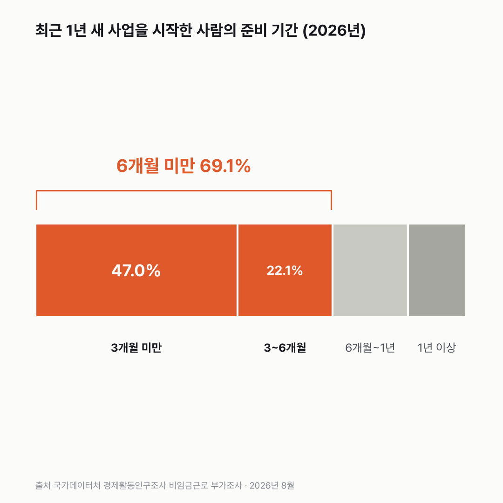

새로 사업 시작한 사람 열에 일곱, 준비는 반년도 안 됐어요
'하고 싶어서 시작했다'(70.8%)와 '준비가 반년이 안 됐다'(69.1%)가 둘 다 열에 일곱이에요. 둘이 같은 사람인지는 이 표로 알 수 없어요.

3줄 요약
- 최근 1년 안에 사업을 시작한 자영업자의 69.1%는 준비 기간이 6개월이 안 됐어요. 3개월이 안 된 사람만 47.0%예요.
- 35.2%는 500만 원이 안 되는 돈으로 시작했어요. 1년 전엔 31.9%였어요.
- 월급 받는 일자리를 구하기 어려워 시작했다는 사람은 2023년 15.3%에서 2026년 21.7%로 3년째 늘었어요.
이 조사에서 신규 자영업자는 매년 8월을 기준으로 지난 한 해 안에 사업을 시작한 사람이에요. 그보다 먼저 시작했으면 이 칸에 들어오지 않아요. 표에는 사람 수 대신 구간별 비율만 나와요.
이 사람들의 준비 기간을 구간별로 나누면 3개월 미만이 47.0%로 거의 절반이고, 3~6개월이 22.1%예요. 6개월~1년은 17.5%, 1년 넘게 준비한 사람은 13.5%뿐이었어요.
들고 시작한 돈은 셋 중 한 명이 500만 원 미만이었어요. 2026년 35.2%였고, 2024년엔 39.8%로 더 높았어요. 물론 여기엔 처음부터 큰돈이 필요 없는 일을 시작한 사람도 들어 있어요.

시작한 이유를 보니 취업이 어려워서라는 답이 3년째 늘고 있었어요. 2023년 15.3%, 2026년 21.7%. 2021년에도 22.2%였으니 처음 보는 높이는 아니에요.

그래서 취업이 어려워 시작한 사람이 가장 많을 줄 알았는데, 기대한 것과 반대였어요. 가장 많이 고른 건 '자신만의 사업을 직접 경영하고 싶어서'였고, 2026년에도 70.8%였어요.
스스로 원해서 시작한 사람이 열에 일곱, 준비가 반년이 안 된 사람도 열에 일곱이에요. 두 무리는 얼마나 겹칠까요? 표를 덮고도 그 질문이 남았어요.
이 숫자는 어디서 왔나요
출처
어떻게 셌나요
- 매년 8월에 하는 조사예요. 신규 자영업자는 최근 1년 안에 사업을 시작한 자영업자예요. 2015~2017년엔 '2년 이내'로 정의가 달라서 2018년부터만 썼어요.
- 표에는 사람 수 대신 구간별 구성비(전체를 100으로 놓았을 때 각 구간의 비율)만 있어요.
- 금액은 물가를 반영하지 않은 그해 돈이에요. '500만 원 미만'에는 따로 자본이 필요 없었던 경우도 들어가요(보도).
- 표에서 가장 짧은 준비기간 구간은 '1~3개월 미만'이고 그보다 짧은 칸이 따로 없어요. 그래서 본문과 차트에선 '3개월 미만'으로 적었어요.
- 표본조사라 해마다 1~3%p씩 오르내려요.
새 글 나오면 받아 보기
피드 리더 앱에 이 사이트 주소를 한 번 넣어 두면, 새 글이 올라올 때 앱에 떠요. 가입이나 메일 주소는 필요 없어요.
받는 법 보기
- 피드 리더 앱을 하나 골라요. 새 글을 모아 보여 주는 앱이에요. 예를 들면 Feedly나 Inoreader가 있어요. 둘 다 무료고 웹·휴대폰에서 써요.
- 앱에서 '구독 추가'(+)를 누르고 아래 주소를 붙여 넣어요.
- 끝이에요. 새 글이 올라오면 앱 목록에 떠요.
https://protofu.github.io/opendata-insight/feed.xmlFeedly를 쓴다면 여기를 눌러 바로 추가할 수도 있어요.